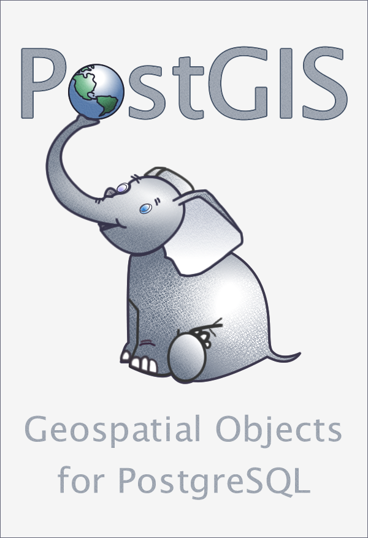
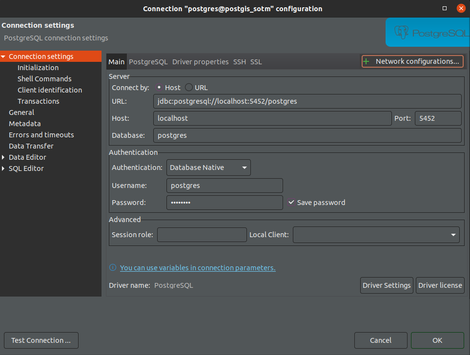
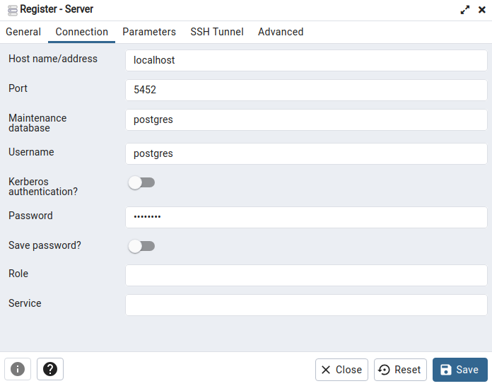
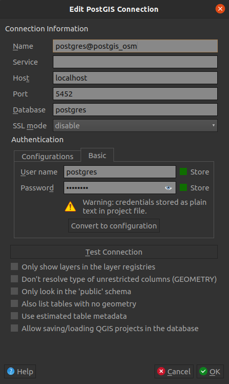

PostGIS
Storing geographic data in PostgreSQL: PostGIS to the rescue!
PostGIS is an open-source geospatial extension for PostgreSQL, a popular relational database management system (RDBMS). It enhances PostgreSQL by adding support for geographic objects, allowing the storage, retrieval, and analysis of geospatial data.
PostGIS enables the database to handle various geospatial data types such as points, lines, polygons, and geographic features with associated attributes. It provides a wide range of spatial functions and operators, enabling complex geospatial operations like spatial joins, buffering, and geometric calculations.
PostGIS is powerful because it allows users to store and manage large volumes of geospatial data efficiently, perform spatial queries for mapping applications, conduct spatial analysis, and support geographic information system (GIS) functionalities within a database environment. Its ability to handle spatial indexing and advanced spatial analysis makes it a valuable tool for applications dealing with geospatial data.

PostGIS includes an optimized spatial indexing system enabling high performance even with a significant volume of data, which is essential for some applications. This is the case for the usage targeted in this Workshop, as obviously OpenStreetMap represents a massive amount of data!
Lastly, the choice of PostGIS is reinforced by its open source nature and active community. The PostGIS community provides regular updates, security patches, and comprehensive documentation, making it a reliable choice for storing and querying medium to large-scale OpenStreetMap datasets.
PostGIS docker container
Now that you know both Docker and PostGIS, it is time to use them!
To directly create a PostgreSQL 17 database including PostGIS extension (version 3.5), you can run the following command:
docker run \
--name postgis_sotm \
-p 5482:5432 \
-e POSTGRES_PASSWORD=postgres \
-d postgis/postgis:17-3.5
WARNING: if you are using Mac OS, you can have troubles with this image because it doesn't support ARM64 architecture. To avoid it, you can use another (non official) PostGIS image and replace the last line by:
-d imresamu/postgis:latest
Note that this command includes some parameters:
-
--name postgis_sotmspecifies the name of your new docker container as "postgis_sotm -
-p 5482:5432sets up the port forwarding. The first port number corresponds to your host port and the second port number corresponds to your container port. They are different to avoid a possible conflict with an existing PostgreSQL installation on your device.- Host port number: to avoid conflicts with an existing PostgreSQL installation running on port 5432 (the default port for PostgreSQL) we change this parameter using
-p 5482:5432to setup your container on host port number 5482. - Container port number: 5432 is the default port of PostgreSQL and you need to expose it to be able to access the database in your container. You can keep this value even if you have another PostgreSQL installation or container.
- Host port number: to avoid conflicts with an existing PostgreSQL installation running on port 5432 (the default port for PostgreSQL) we change this parameter using
-
-e POSTGRES_PASSWORD=postgresspecifies the password for admin user postgres. In this workshop we will only setup a sandbox to play with PostGIS and use postgres/postgres as credentials. If you consider using this container for another purpose please change this setup. -
-d postgis/postgis:17-3.5specifies the docker image from Docker Hub we use. Here we use the official PostGIS image (https://hub.docker.com/r/postgis/postgis) based on a Postgres image and in a specific version: PostgreSQL 17 + PostGIS 3.5.
Once your container is running, you can see it in the active container list in Docker Desktop interface or by using the following docker command:
docker ps
Interacting with PostGIS: SQL client
To interact with your database, I recommend 3 differents applications with GUI and embedded SQL editor: DBeaver, pgAdmin or QGIS. To go through this workshop, you will need at least one of them. You could also run SQL commands in psql command line tool but it is less user friendly in this learning context.
DBeaver community edition (CE)
DBeaver Community is a free cross-platform database tool for developers, database administrators, analysts, and everyone working with data. It supports all popular SQL databases like MySQL, MariaDB, PostgreSQL, SQLite, Apache Family, and more.
DBeaver community edition is the software I recommend to run SQL queries during this workshop. To install it, you can follow the instructions on their official website: https://dbeaver.io/download/
To create your first PostgreSQL connexion you can follow the documentation: https://dbeaver.com/2022/03/03/how-to-create-database-connection-in-dbeaver/. Note that DBeaver will automatically download and install the PostgreSQL driver when you will create your first PostgreSQL connexion.
If you followed the previous docker configuration (user, password, port number), you can use the following connection setup:

pgAdmin
If you prefer the official PostgreSQL client and interface, you can also install and use pgAdmin: https://www.pgadmin.org/download/
pgAdmin is the most popular and feature rich Open Source administration and development platform for PostgreSQL, the most advanced Open Source database in the world.
If you followed the previous docker configuration (user, password, port number), you can create a new server connection (object > register > server) and use the following connection setup:

QGIS
A Free and Open Source Geographic Information System
QGIS software is able to interact with a PostGIS database and run SQL queries through its powerfull DB Manager plugin.
To install QGIS, please follow official documentation: https://www.qgis.org/en/site/forusers/download.html
To add the connection to your local PostGIS database: right click on "PostgreSQL" in the "Browser" left menu > new connection and use the following setup:
